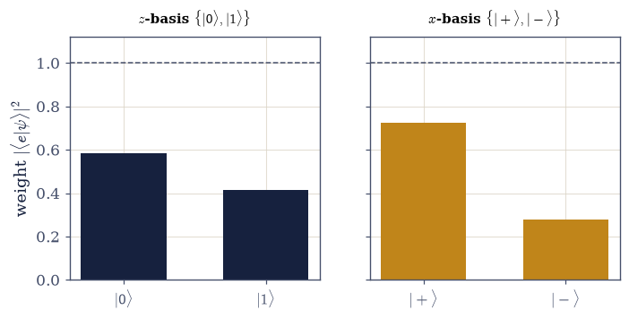

6.3 Dirac Notation, Bases, and Spectral Decomposition#
Notebook overview#
Two notebooks ago we built the space; one notebook ago we built the operators. This notebook builds the language in which the rest of the volume is written — Dirac’s notation of kets and bras — and the surprise it holds is that the notation is not a convenience laid on top of the mathematics but a calculus: a small set of symbols whose manipulation rules do the work for us. It is the closing notebook of Movement 0, the mathematical arsenal, and by its end the formalism is complete and the physics can begin.
The notebook also keeps two promises. In §6.1 we used \(\langle u|v\rangle\) as shorthand and promised that the bra \(\langle u|\) would later become an object in its own right; here it does — a dual vector, the linear functional “take the inner product with \(u\).” In §6.2 we wrote the spectral theorem as a matrix factorization \(A=V\Lambda V^{\dagger}\) and promised an outer-product form; here it arrives as \(A=\sum_\lambda\lambda\,|\lambda\rangle\langle\lambda|\), a Hermitian operator written as its eigenvalues times the projectors onto its eigenvectors. After this notebook there are no remaining notation deferrals in the arsenal.
Three constructions carry the whole calculus, and the notebook is built around them. The projector \(|e\rangle\langle e|\) extracts the component of a state along \(|e\rangle\). The resolution of the identity \(\sum_i|e_i\rangle\langle e_i|=I\) is the compact statement that any state expands in any orthonormal basis — and the single most useful move in the formalism is to insert the identity anywhere a change of basis is wanted. The spectral decomposition \(A=\sum_i\lambda_i|\lambda_i \rangle\langle\lambda_i|\) is “diagonalize” in its cleanest dress, and it makes any function of an operator trivial: apply the function to the eigenvalues. That last fact is the general machinery behind the exponential map of §6.2 and behind the time-evolution operator \(U(t)=e^{-iHt/\hbar}\) that will run all of dynamics (§6.7).
As in every Volume VI notebook, each exercise opens with a crystal-clear statement and enumerated parts that name the exact operation to run — numpy.outer (with numpy.conj for the bra) to
build \(|u\rangle\langle v|\), explicit projector and resolution-of-identity construction,
numpy.linalg.eigh for the spectral data, scipy.linalg.expm to cross-check the spectral
exponential — so the method is never something to reverse-engineer.
A word on what closes here. This notebook resolves the two boundaries the arsenal carried. The bra \(\langle u|\) is now a dual vector (as promised in §6.1), and the outer product, projectors, the projector form of the spectral theorem, and functions of operators are all developed (as promised in §6.2). What we deliberately do not do is the physics: the projector is the mathematics of a measurement, but the measurement postulate itself — outcomes, probabilities, collapse — is §6.5. We build the apparatus here and let the physics out in the next movement.
How to read the checks. Each exercise closes with a
validatecall against an independent fact: the outer product acting as an operator; a projector’s idempotence, Hermiticity, and rank; the resolution of the identity to machine precision; a change of basis preserving eigenvalues and inner products; the spectral decomposition reconstructing a Hermitian operator from its eigen-projectors; a function of an operator matchingscipy.linalg.expmand a square root squaring back; and a qubit’s outcome-weights summing to one in two different bases. A ✓ is strong evidence; a ✗ is a prompt to locate the discrepancy.Scope. Finite-dimensional, orthonormal bases throughout. The measurement postulate is §6.5; the Stern–Gerlach experiment and the two-state system that open the physics are §6.4; the time-evolution operator is §6.7; the Bloch sphere is §6.8. See Sakurai & Napolitano (Ch. 1); Dirac, The Principles of Quantum Mechanics; and Notebooks §6.1 (the inner product), §6.2 (the spectral theorem, the exponential map).
Theory in brief#
Kets, bras, and the dual space#
A ket \(|\psi\rangle\) is a state vector, a column of complex numbers. A bra \(\langle\phi|\) is the linear functional that eats a ket and returns the number \(\langle\phi|\psi\rangle\) — “take the inner product with \(\phi\).” The bras form the dual space; in components a bra is the conjugate-transpose row vector, the adjoint of the ket,
This is the meaning deferred from §6.1: the inner product is a bra acting on a ket.
The outer product#
Multiplied the other way, \(|u\rangle\langle v|\) is an operator. Acting on a ket it gives
“measure the overlap with \(v\), output that much of \(u\).” In components it is numpy.outer(u, numpy.conj(v)). The inner product \(\langle v|u\rangle\) is a number; the outer product \(|u\rangle
\langle v|\) is an operator. This is the construction deferred from §6.2.
Projectors#
For a normalized \(|e\rangle\), the operator
is the projector onto the \(e\)-direction: it keeps only the part of \(|\psi\rangle\) along \(|e \rangle\). Projectors are idempotent (\(P^2=P\) — projecting twice is projecting once), Hermitian, and rank-1. Physically the projector is the mathematical content of a measurement (the postulate is §6.5).
The resolution of the identity#
For any orthonormal basis \(\{|e_i\rangle\}\),
This compact identity is “every state expands in the basis” — recovering the expansion coefficients of §6.1, now as projections. The trick that makes the notation flow is to insert the identity anywhere a basis change or expansion is wanted.
Change of basis as a unitary#
Changing from one orthonormal basis to another is a unitary \(U\) whose columns are the new basis vectors; components and operators transform as
A change of basis is a passive relabelling, not a physical change (cf. the unitary operators of §6.2).
The spectral decomposition in projector form#
The spectral theorem of §6.2, \(A=V\Lambda V^{\dagger}\), is exactly
a Hermitian operator as its eigenvalues times the projectors onto its eigenvectors. The spectral projectors are orthogonal and resolve the identity. This is the cleanest statement of “diagonalize,” and the form the measurement postulate uses (§6.5).
Functions of operators#
Because \(A=\sum_i\lambda_i|\lambda_i\rangle\langle\lambda_i|\), any function of the operator is
apply \(f\) to the eigenvalues, in the eigenbasis. This is the general machinery behind the exponential map of §6.2, \(e^{-iH}=\sum_i e^{-i\lambda_i}|\lambda_i\rangle\langle\lambda_i|\), and behind the time-evolution operator \(U(t)=e^{-iHt/\hbar}=\sum_n e^{-iE_nt/\hbar}|n\rangle\langle n|\) — the single most important function of an operator in the volume (§6.7).
Setup#
Setup holds the imports, the plot colours, and the three notation primitives
the calculus is written in: ket (components as a complex array), bra (the
conjugate row functional), and outer (the operator \(|u\rangle\langle v|\), one
numpy.outer call). Those are the alphabet. The three constructions the
notebook is built around are yours to write — the projector in Exercise 2,
the resolution of the identity in Exercise 3, and the general spectral
machine function_of_operator in Exercise 6, with the spectral decomposition
itself assembled from eigen-projectors in Exercise 5.
The Setup below holds this notebook’s data and instruments — nothing you are asked to build. It is collapsed so the building stays yours; expand it whenever you want the details.
Exercise 1 — Kets, bras, and the outer product#
Let \(|\phi\rangle=(1,\ i,\ 0)^{\mathsf T}\) and \(|\psi\rangle=(0,\ 1,\ i)^{\mathsf T}\) and \(|w\rangle=(2,\ 0,\ 1)^{\mathsf T}\) in \(\mathbb{C}^3\). Form the inner product \(\langle\phi|\psi \rangle\) and the outer product \(|\phi\rangle\langle\psi|\), identify what kind of object each is, and verify that the outer product acts as an operator via \(\big(|u\rangle\langle v|\big)|w\rangle=\langle v|w\rangle|u\rangle\) Eq. 501, Eq. 502.
Build the kets with the
kethelper (1-D complex arrays).Form the inner product \(\langle\phi|\psi\rangle\) with
bra(phi) @ psi(equivalentlynumpy.vdot(phi, psi)) and confirm it is a scalar (numpy.ndimis 0).Form the outer product \(|\phi\rangle\langle\psi|\) with the
outerhelper (numpy.outer(phi, numpy.conj(psi))) and confirm it is an operator (a 2-D array, shape \(3\times3\)).Verify the action: compute \(\big(|\phi\rangle\langle\psi|\big)|w \rangle\) as
outer(phi, psi) @ wand compare with \(\langle\psi|w\rangle|\phi\rangle\) (numpy.vdot( psi, w) * phi) usingnumpy.allclose.
⟨φ|ψ⟩ = -1j (a scalar: ndim = 0)
|φ⟩⟨ψ| is an operator of shape (3, 3)
(|φ⟩⟨ψ|)|w⟩ = ⟨ψ|w⟩|φ⟩ ? True
Validation 1#
✓ the inner product ⟨φ|ψ⟩ is a number; the outer product |φ⟩⟨ψ| is an operator with (|φ⟩⟨ψ|)|w⟩ = ⟨ψ|w⟩|φ⟩
True
Exercise 2 — Projectors#
The first of the three constructions that carry the calculus. For a normalized \(|e\rangle\) the operator \(P=|e\rangle\langle e|\) Eq. 503 keeps only the part of a state that lies along \(|e\rangle\), and three properties define it: idempotence (\(P^2=P\) — projecting twice is projecting once), Hermiticity (\(P=P^{\dagger}\)), and a rank-1 spectrum, eigenvalues \(\{0,0,1\}\). Its action on a state is \(P|\psi\rangle=\langle e|\psi\rangle|e\rangle\). A projector is the mathematics of a measurement outcome (§6.5). Those four facts are the acceptance tests for the operator built here, and the state under test is \(|e\rangle=(1,\ i,\ 1)^{\mathsf T}/\sqrt3\).
Write
projector(e), the operator \(P=|e\rangle\langle e|\) for a normalized kete: the outer product of the ket with its own bra,numpy.outer(e, numpy.conj(e)).Normalize \(|e\rangle\) (
numpy.linalg.norm) and build \(P\) with it.Verify idempotence with
numpy.allclose(P @ P, P), Hermiticity withnumpy.allclose(P, P.conj().T), and the rank-1 spectrum withnumpy.linalg.eigvalsh(eigenvalues sort to \(\{0,0,1\}\)).Take an arbitrary state \(|\psi\rangle\) and confirm
P @ psiequals \(\langle e|\psi\rangle|e\rangle\) (numpy.vdot(e, psi) * e).
P² = P (idempotent) ? True
P = P† (Hermitian) ? True
eigenvalues of P: [-0. 0. 1.] → rank-1 {0,0,1}: True
P|ψ⟩ = ⟨e|ψ⟩|e⟩ (keeps only the e-component) ? True
Validation 2#
✓ a projector P=|e⟩⟨e| is idempotent (P²=P), Hermitian, rank-1 (eigenvalues {0,1}), and extracts the e-component, P|ψ⟩=⟨e|ψ⟩|e⟩
True
Exercise 3 — The resolution of the identity#
The second construction, and the one that does the most work. For any orthonormal basis
\(\{|e_i\rangle\}\) of \(\mathbb{C}^4\) the sum of its rank-1 projectors is the identity,
\(\sum_i|e_i\rangle\langle e_i|=I\) Eq. 504, which is the compact form of “every
state expands in the basis”: \(|\psi\rangle=\sum_i\langle e_i|\psi\rangle|e_i\rangle\), with the
expansion coefficients of §6.1 now reading as projections. A QR
factorization of a random complex matrix supplies the basis — numpy.linalg.qr returns a \(Q\) whose
columns are orthonormal.
Write
resolution_of_identity(basis), which sums the rank-1 projectors \(\sum_i|e_i\rangle\langle e_i|\) over an orthonormal basis held one vector per row, using theprojectoryou wrote in Exercise 2 on each row.Build an orthonormal basis by
numpy.linalg.qrof a random complex matrix and take the columns as the basis vectors.Sum the projectors with it and confirm the result equals
numpy.eye(4)(numpy.max(numpy.abs( R - numpy.eye(4)))).Expand a state by inserting the identity: compute \(\sum_i\langle e_i|\psi \rangle|e_i\rangle\) (a sum of
numpy.vdot(e_i, psi) * e_i) and confirm withnumpy.allclosethat it reconstructs \(|\psi\rangle\). Inserting the identity is the move that makes Dirac notation flow.
Σ|e_i⟩⟨e_i| = I ? max|Σ − I| = 4.4e-16
|ψ⟩ = Σ⟨e_i|ψ⟩|e_i⟩ reconstructs the state ? True
Validation 3#
✓ an orthonormal basis resolves the identity, Σ|e_i⟩⟨e_i| = I [got 4.38195e-16 vs expected 0 (rtol=1e-06, atol=1e-12)]
✓ inserting the identity expands any state, |ψ⟩ = Σ⟨e_i|ψ⟩|e_i⟩ (the coefficients of §6.1 as projections)
True
Exercise 4 — Change of basis as a unitary#
Take the Hermitian operator \(H\) built below and the orthonormal basis \(\{|e_i\rangle\}\) of Exercise 3. Transform a state and the operator into that basis, show the basis-change matrix is unitary, and confirm the transformation preserves eigenvalues and inner products — a passive relabelling, not a physical change Eq. 505.
Assemble the basis-change matrix \(U\) with
numpy.column_stackso its columns are the new basis vectors.Verify \(U^{\dagger}U=I\) with
numpy.allclose(U.conj().T @ U, numpy.eye(4)).Transform the state as \(\psi'=U^{\dagger}\psi\) (
U.conj().T @ psi) and the operator as \(A'=U^{\dagger}AU\) (U.conj().T @ H @ U).Verify the eigenvalues are unchanged (
numpy.linalg.eigvalshof \(H\) and of \(A'\) agree) and an inner product is preserved (\(\langle U^{\dagger}u|U^{\dagger}v\rangle=\langle u|v\rangle\)). A change of basis is a unitary (§6.2), physically inert.
U†U = I (basis change is unitary) ? True
eigenvalues preserved under A' = U†AU ? True
inner products preserved, ⟨U†u|U†v⟩ = ⟨u|v⟩ ? True
Validation 4#
✓ a change of basis is a unitary transformation (U†U=I) that preserves eigenvalues and inner products — a passive relabelling
True
Exercise 5 — The spectral decomposition in projector form#
For the Hermitian operator \(H\) of Exercise 4, write it as a sum of eigenvalues times the projectors onto its eigenvectors, \(H=\sum_i\lambda_i|\lambda_i\rangle\langle\lambda_i|\), and verify the reconstruction together with the orthogonality and completeness of the spectral projectors Eq. 506. This is “diagonalize” in its cleanest form — the form measurement uses (§6.5).
Diagonalize \(H\) with
numpy.linalg.eigh, giving eigenvalues \(\lambda_i\) and the eigenvectors as the columns of \(V\).Build the spectral projectors \(P_i=|\lambda_i\rangle\langle \lambda_i|\) with the
projectoryou wrote in Exercise 2, applied to each columnV[:, i].Reconstruct \(\sum_i\lambda_iP_i\) (a sum of
lambda_i * P_i) and compare with \(H\) vianumpy.max(numpy.abs(H - sum)).Verify the projectors are orthogonal (\(P_iP_j=0\) for \(i\neq j\), via
numpy.allclose(P_i @ P_j, 0)) and resolve the identity (\(\sum_iP_i=I\)).
H = Σλ_i|λ_i⟩⟨λ_i| ? max|H − Σλ_iP_i| = 3.1e-15
spectral projectors orthogonal, P_iP_j = 0 (i≠j) ? max = 2.0e-16
spectral projectors complete, ΣP_i = I ? True
Validation 5#
✓ the spectral decomposition A = Σλ_i|λ_i⟩⟨λ_i| writes a Hermitian operator via its eigen-projectors [got 3.10871e-15 vs expected 0 (rtol=1e-06, atol=1e-12)]
✓ the spectral projectors are orthogonal (P_iP_j=0, i≠j) and resolve the identity (ΣP_i=I)
True
Exercise 6 — Functions of operators#
Because a Hermitian operator equals its eigenvalues times the projectors onto its eigenvectors,
any function of it is \(f(A)=\sum_i f(\lambda_i)|\lambda_i\rangle\langle\lambda_i|\)
Eq. 507 — apply \(f\) to the eigenvalues, in the eigenbasis. Two functions put
that claim under independent test. The exponential \(e^{-iH}\) has a reference implementation in
scipy.linalg.expm, the true matrix exponential, computed without ever diagonalizing; and the
square root of the positive operator \(H_+=HH^{\dagger}+I\) (positive definite, so its eigenvalues
are all \(>0\) and the root is real) must square back to \(H_+\). The prime example of that rule is
the time-evolution operator \(e^{-iHt/\hbar}\) (§6.7), the exponential
applied to the eigenvalues of the Hamiltonian.
Write
function_of_operator(H, f): diagonalizeHwithnumpy.linalg.eigh, then sum \(f(\lambda_i)\,\)projector(V[:, i])over the eigenvector columns, using theprojectoryou wrote in Exercise 2. Write this one yourself — the implementation is the lesson.Build \(e^{-iH}\) as
function_of_operator(H, lambda x: numpy.exp(-1j * x))and compare it to the true matrix exponentialscipy.linalg.expm(-1j * H)(numpy.max(numpy.abs(...))) — they must agree.Build \(H_+=HH^{\dagger}+I\), take \(\sqrt{H_+}\) as
function_of_operator(H_plus, numpy.sqrt), and confirm it squares back:sqrtH @ sqrtHequals \(H_+\) (numpy.allclose).
e^(−iH): spectral Σe^(−iλ)|λ⟩⟨λ| vs scipy.linalg.expm: max diff = 1.6e-15
√(H₊): (√H₊)² = H₊ ? max|(√H₊)² − H₊| = 3.2e-14
Validation 6#
✓ a function of an operator is f applied to its eigenvalues, f(A)=Σf(λ_i)|λ_i⟩⟨λ_i| (e^{-iH} matches scipy.linalg.expm; √(H₊) squares back) [max|Δ| = 3.19744e-14 (rtol=1e-06, atol=1e-10)]
True
Exercise 7 — The qubit in two bases, and a projector measurement#
Take the qubit state \(|\psi\rangle=\cos\tfrac{\theta}{2}|0\rangle+e^{i\varphi}\sin \tfrac{\theta}{2}|1\rangle\) with \(\theta=1.4,\ \varphi=1.1\). Express it in the computational (\(z\)) basis \(\{|0\rangle,|1\rangle\}\) and the (\(x\)) basis \(\{|{+}\rangle,|{-}\rangle\}\), relate the two by a unitary, verify each basis resolves the identity, and compute the projector weights \(|\langle e|\psi \rangle|^2\) in each — confirming they sum to one in both Eq. 505, Eq. 503, Eq. 504. One state in two bases gives two sets of outcome-probabilities, a direct preview of measurement in different bases (§6.5) and of the Bloch sphere (§6.8).
Build \(|\psi\rangle\) with the
kethelper and both bases (\(|{\pm}\rangle=(|0\rangle \pm|1\rangle)/\sqrt2\)).Form the Hadamard-like unitary \(U\) connecting them with
numpy.column_stackof \(|{+}\rangle,|{-}\rangle\), and confirmis-unitary vianumpy.allclose(U.conj().T @ U, numpy.eye(2)).Verify each basis resolves the identity with the
resolution_of_identityyou wrote in Exercise 3 (both equalnumpy.eye(2)).Compute the projector weights \(|\langle e|\psi\rangle|^2\) in each basis (
abs(numpy.vdot(e, psi))**2) and confirm each set sums to 1 (numpy.sum).
basis-change U†U = I ? True
z-basis resolves I ? True; x-basis resolves I ? True
z-basis weights [0.585 0.415] sum 1.000000
x-basis weights [0.7235 0.2765] sum 1.000000
Validation 7#
✓ a state has well-defined outcome probabilities in any orthonormal basis: both bases resolve the identity and their projector weights sum to 1
True

Fig. 513 One state, two bases, two sets of outcome-probabilities. The same qubit \(|\psi\rangle\) is resolved in the computational \(z\)-basis \(\{|0\rangle,|1\rangle\}\) (left, ink) and the \(x\)-basis \(\{|{+}\rangle,|{-}\rangle\}\) (right, amber); the bars are the projector weights \(|\langle e|\psi\rangle|^2\). In each basis the weights sum to one (dashed line) — the resolution of the identity guarantees it — yet the two distributions differ, because the bases ask different questions of the state. This is the whole content of measuring in different bases, here pure linear algebra; the physics of why these are probabilities is the Born rule (§6.5), and the geometry behind the two bases is the Bloch sphere (§6.8).#
Exercise 8 — The calculus of states and operators (synthesis)#
Dirac notation turned the inner product into a bra acting on a ket, the outer product into an operator, and three constructions into the working calculus of quantum mechanics. With the projector \(|e\rangle\langle e|\) we extract a component; with the resolution of the identity \(\sum_i|e_i\rangle\langle e_i|=I\) we expand in any basis at will — insert the identity; with the spectral decomposition \(A=\sum_i\lambda_i|\lambda_i\rangle\langle\lambda_i|\) we diagonalize; and with \(f(A)=\sum_i f(\lambda_i)|\lambda_i\rangle\langle\lambda_i|\) we apply any function to an operator by applying it to the eigenvalues. The arsenal is complete: we have the space (§6.1), the operators (§6.2), and now the language (§6.3). Movement 0 is closed.
There is no new computation to run: the calculus is the result. We have spent three notebooks building it and have not yet measured anything — and yet the apparatus of measurement is already in our hands. The projector we built is a measurement outcome; the resolution of the identity is the set of possible outcomes; the spectral decomposition is the observable, its eigenvalues the results and its projectors the outcomes. The physics was hiding in the notation. The next notebook (§6.4) lets it out, taking this entire apparatus to the Stern–Gerlach experiment and the two-state system — the first real measurement of the volume, and the start of Movement I.
Notebook summary#
Dirac notation, the language of the rest of the volume, and the close of Movement 0.
Kets, bras, the dual space Eq. 501: a ket is a state; a bra \(\langle\phi|=\)
phi.conj()is the linear functional “inner product with \(\phi\)”; \(\langle\phi|\psi\rangle\) is a number.The outer product Eq. 502: \(|u\rangle\langle v|=\)
numpy.outer(u, numpy.conj(v))is an operator, \(\big(|u\rangle\langle v|\big)|w\rangle=\langle v|w\rangle|u\rangle\).Projectors Eq. 503: \(P=|e\rangle\langle e|\) is idempotent, Hermitian, rank-1, and extracts the \(e\)-component — the mathematics of a measurement (§6.5).
The resolution of the identity Eq. 504: \(\sum_i|e_i\rangle\langle e_i|=I\) — insert the identity to expand in any basis; recovers the coefficients of §6.1 as projections.
Change of basis Eq. 505: a unitary \(A'=U^{\dagger}AU\), \(\psi'=U^{\dagger}\psi\), preserving eigenvalues and inner products — a passive relabelling.
The spectral decomposition Eq. 506: \(A=\sum_i\lambda_i|\lambda_i\rangle\langle \lambda_i|\), the eigen-projectors orthogonal and complete — “diagonalize” in its cleanest form.
Functions of operators Eq. 507: \(f(A)=\sum_i f(\lambda_i)|\lambda_i\rangle \langle\lambda_i|\); \(e^{-iH}\) matches
scipy.linalg.expm, the seed of time evolution (§6.7).
The arsenal is complete — the space, the operators, the language. The projector is already a measurement, the resolution of the identity already the set of outcomes, the spectral decomposition already the observable. The physics was hiding in the notation; Movement I lets it out.
Outlook#
The postulates of quantum mechanics (§6.5), written in this language: observables as Hermitian operators, outcomes as eigenvalues, probabilities as \(|\langle\lambda|\psi\rangle|^2\), measurement as projection.
The Stern–Gerlach experiment and the two-state system (§6.4): the formalism meets a real measurement, and Movement I begins.
The time-evolution operator (§6.7): \(U(t)=e^{-iHt/\hbar}=\sum_n e^{-iE_nt/\hbar}|n\rangle\langle n|\), the prime function of an operator.
Cross-reference §6.1 (the inner product, expansion coefficients), §6.2 (the spectral theorem, the exponential map), and forward to §6.4, §6.5, §6.7, §6.8.